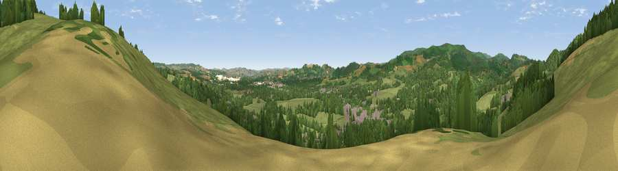

Viewpoint near Bovey Tracey
#20991 in England · top 47% of its area beats it · near Bovey TraceyWhere it is
The exact computed spot (SX 81725 78925). Click the marker for map links.
The view, rendered

A 360° render of this exact spot computed from the terrain model, tree cover and land cover — summer colours, afternoon light, calibrated against photographs of famous viewpoints. Real trees, hedges and buildings will differ in detail.
The panorama
Grey silhouette: terrain skyline in each direction (720 bearings, Earth curvature and refraction included). Dashed green: skyline with trees (+15 m) and buildings (+8 m) as obstacles. Blue strip: how far the ground is visible on each bearing.
Where the view opens
Wedge length = distance to the farthest visible ground on that bearing (vegetation-aware). Rings at 10, 25 and 50 km.
What fills the view
47% woodland · 40% grassland · 10% built-up · 2% cropland
Angular shares of the visible panorama (visual magnitude), not map area. Landscape diversity 0.46 (0–1 Shannon).
Key numbers
More beautiful places nearby
The staircase of upgrades: each row has a higher view potential than everything closer. Driving times are estimates from straight-line distance, calibrated against real road routing — check an actual route before setting out.
| Place | Direction | Drive | Score |
|---|---|---|---|
| Viewpoint near Bovey Tracey | ENE · 1 km | ~3 min | 51.1 |
| Viewpoint near Hennock | NNE · 1 km | ~4 min | 70.7 |
| Shaptor Rock | NNW · 2 km | ~5 min | 71.0 |
| Viewpoint near Haytor Vale | W · 5 km | ~11 min | 80.1 |
| Viewpoint near Buckland in the Moor | SW · 10 km | ~19 min | 80.7 |
| Viewpoint near Kenton | E · 11 km | ~21 min | 82.9 |
| Viewpoint near Holcombe | ESE · 12 km | ~23 min | 83.3 |
| Viewpoint near Shaldon | SE · 14 km | ~25 min | 83.8 |
50.59803, -3.67252 · source: screening · position refined by local search. Computed location — check access rights before visiting.